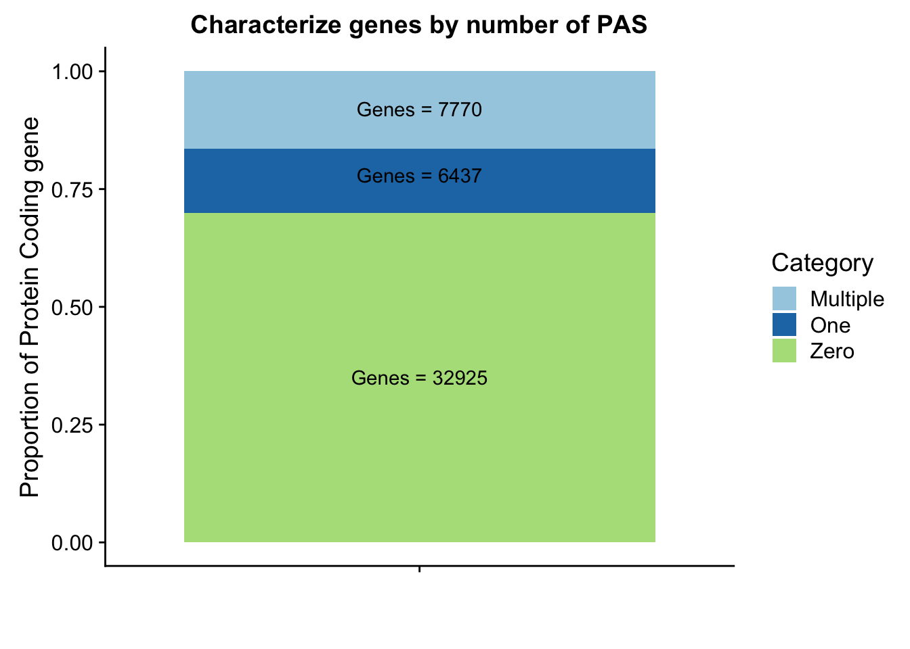
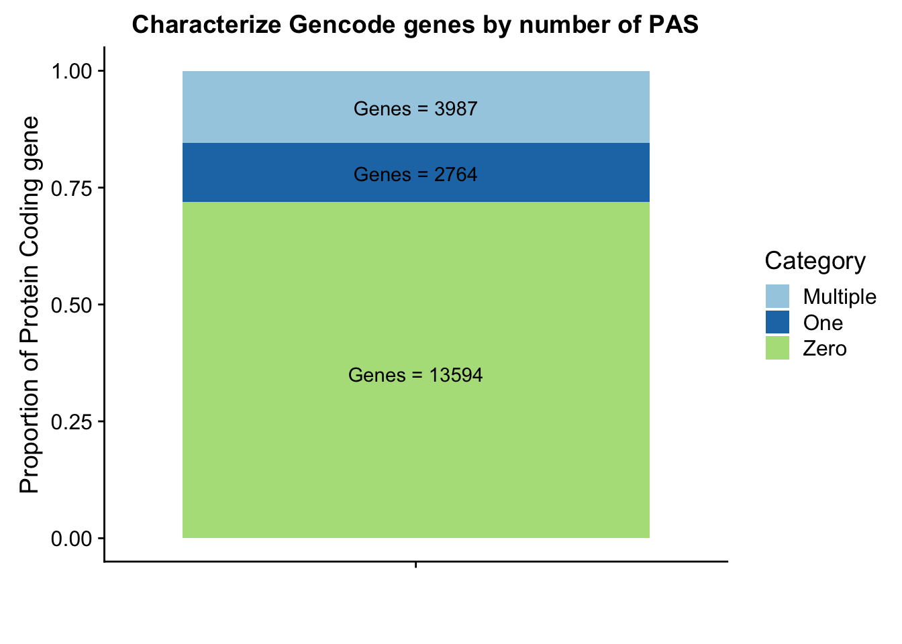

Last updated: 2018-08-29
workflowr checks: (Click a bullet for more information) ✔ R Markdown file: up-to-date
Great! Since the R Markdown file has been committed to the Git repository, you know the exact version of the code that produced these results.
✔ Environment: empty
Great job! The global environment was empty. Objects defined in the global environment can affect the analysis in your R Markdown file in unknown ways. For reproduciblity it’s best to always run the code in an empty environment.
✔ Seed:
set.seed(12345)
The command set.seed(12345) was run prior to running the code in the R Markdown file. Setting a seed ensures that any results that rely on randomness, e.g. subsampling or permutations, are reproducible.
✔ Session information: recorded
Great job! Recording the operating system, R version, and package versions is critical for reproducibility.
✔ Repository version: 6b818cb
wflow_publish or wflow_git_commit). workflowr only checks the R Markdown file, but you know if there are other scripts or data files that it depends on. Below is the status of the Git repository when the results were generated:
Ignored files:
Ignored: .DS_Store
Ignored: .Rhistory
Ignored: .Rproj.user/
Ignored: output/.DS_Store
Untracked files:
Untracked: analysis/ncbiRefSeq_sm.sort.mRNA.bed
Untracked: analysis/snake.config.notes.Rmd
Untracked: data/18486.genecov.txt
Untracked: data/APApeaksYL.total.inbrain.bed
Untracked: data/Totalpeaks_filtered_clean.bed
Untracked: data/YL-SP-18486-T-combined-genecov.txt
Untracked: data/YL-SP-18486-T_S9_R1_001-genecov.txt
Untracked: data/bedgraph_peaks/
Untracked: data/bin200.5.T.nuccov.bed
Untracked: data/bin200.Anuccov.bed
Untracked: data/bin200.nuccov.bed
Untracked: data/clean_peaks/
Untracked: data/comb_map_stats.csv
Untracked: data/comb_map_stats.xlsx
Untracked: data/combined_reads_mapped_three_prime_seq.csv
Untracked: data/gencov.test.csv
Untracked: data/gencov.test.txt
Untracked: data/gencov_zero.test.csv
Untracked: data/gencov_zero.test.txt
Untracked: data/gene_cov/
Untracked: data/joined
Untracked: data/leafcutter/
Untracked: data/merged_combined_YL-SP-threeprimeseq.bg
Untracked: data/nom_QTL/
Untracked: data/nuc6up/
Untracked: data/peakPerRefSeqGene/
Untracked: data/perm_QTL/
Untracked: data/reads_mapped_three_prime_seq.csv
Untracked: data/smash.cov.results.bed
Untracked: data/smash.cov.results.csv
Untracked: data/smash.cov.results.txt
Untracked: data/smash_testregion/
Untracked: data/ssFC200.cov.bed
Untracked: data/temp.file1
Untracked: data/temp.file2
Untracked: data/temp.gencov.test.txt
Untracked: data/temp.gencov_zero.test.txt
Untracked: output/picard/
Untracked: output/plots/
Untracked: output/qual.fig2.pdf
Unstaged changes:
Modified: analysis/28ind.peak.explore.Rmd
Modified: analysis/cleanupdtseq.internalpriming.Rmd
Modified: analysis/dif.iso.usage.leafcutter.Rmd
Modified: analysis/explore.filters.Rmd
Modified: analysis/peak.cov.pipeline.Rmd
Modified: analysis/pheno.leaf.comb.Rmd
Modified: analysis/test.max2.Rmd
Modified: code/Snakefile
I will use this analysis to work on vizualising some of the processing steps of this analysis.
I want to create a figure similar to the one I created in https://brimittleman.github.io/comparative_threeprime/characterize.ortho.peaks.html. I will use the count distinct function from bedtools map. For this I am using the RefSeq mRNA annotations.
#!/bin/bash
#SBATCH --job-name=refseq_countdistinct
#SBATCH --account=pi-yangili1
#SBATCH --time=24:00:00
#SBATCH --output=refseq_countdistinct.out
#SBATCH --error=refseq_countdistinct.err
#SBATCH --partition=broadwl
#SBATCH --mem=12G
#SBATCH --mail-type=END
bedtools map -c 4 -s -o count_distinct -a /project2/gilad/briana/genome_anotation_data/refseq.ProteinCoding.fullchroms.bed -b /project2/gilad/briana/threeprimeseq/data/mergedPeaks_comb/filtered_APApeaks_merged_allchrom.named.fixed.bed > /project2/gilad/briana/threeprimeseq/data/peakPerRefseqGene/filtered_APApeaks_perRefseqGene.txt
library(tidyverse)── Attaching packages ──────────────────────────────────────────────────────────────────── tidyverse 1.2.1 ──✔ ggplot2 3.0.0 ✔ purrr 0.2.5
✔ tibble 1.4.2 ✔ dplyr 0.7.6
✔ tidyr 0.8.1 ✔ stringr 1.3.1
✔ readr 1.1.1 ✔ forcats 0.3.0── Conflicts ─────────────────────────────────────────────────────────────────────── tidyverse_conflicts() ──
✖ dplyr::filter() masks stats::filter()
✖ dplyr::lag() masks stats::lag()library(workflowr)This is workflowr version 1.1.1
Run ?workflowr for help getting startedlibrary(reshape2)
Attaching package: 'reshape2'The following object is masked from 'package:tidyr':
smithslibrary(cowplot)
Attaching package: 'cowplot'The following object is masked from 'package:ggplot2':
ggsavenames=c("Chr", "Start", "End", "Name", "Score", "Strand", "numPeaks")
peakpergene=read.table("../data/peakPerRefSeqGene/filtered_APApeaks_perRefseqGene.txt", stringsAsFactors = F, header = F, col.names = names) %>% mutate(onePeak=ifelse(numPeaks==1, 1, 0 )) %>% mutate(multPeaks=ifelse(numPeaks > 1, 1, 0 ))genes1peak=sum(peakpergene$onePeak)/nrow(peakpergene)
genesMultpeak=sum(peakpergene$multPeaks)/nrow(peakpergene)
genes0peak= 1- genes1peak - genesMultpeak
perPeak= c(round(genes0peak,digits = 3), round(genes1peak,digits = 3),round(genesMultpeak, digits = 3))
Category=c("Zero", "One", "Multiple")
perPeakdf=as.data.frame(cbind(Category,as.numeric(perPeak)))Plot these proportions:
lab1=paste("Genes =", genes0peak*nrow(peakpergene), sep=" ")
lab2=paste("Genes =", sum(peakpergene$onePeak), sep=" ")
lab3=paste("Genes =", sum(peakpergene$multPeaks), sep=" ")
genepeakplot=ggplot(perPeakdf, aes(x="", y=perPeak, fill=Category)) + geom_bar(stat="identity")+ labs(title="Characterize genes by number of PAS", y="Proportion of Protein Coding gene", x="")+ scale_fill_brewer(palette="Paired") + coord_cartesian(ylim=c(0,1)) + annotate("text", x="", y= .35, label=lab1) + annotate("text", x="", y= .78, label=lab2) + annotate("text", x="", y= .92, label=lab3)
genepeakplot
| Version | Author | Date |
|---|---|---|
| c6dc97b | brimittleman | 2018-08-28 |
This includes for than 1 isoform for different genes. I am going to go back to the original refseq file and resegment it. Column 13 is the gene name. Column 2 needs to start with NM because that is mRNA.
grep "NM" ncbiRefSeq.txt | awk '{print $3 "\t" $5 "\t" $6 "\t" $2 "\t" $13 "\t" $4}' > ncbiRefSeq.mRNA.named.bedI can write a script that writes only the longest isoform for each gene.
outfile=open("refseq.ProteinCoding.bed", "w")
infile=open("ncbiRefSeq.mRNA.named.bed", "r")
lines=infile.readlines()
lot_lines=len(lines)
for n,ln in enumerate(lines):
chrom, start, end, mRNA, gene, strand = ln.split()
#if first line
if n == 0:
#first line condition
SE_list=[]
cur_gene=gene
SE_list.append(int(start))
SE_list.append(int(end))
elif n == lot_lines-1:
#last line condition
if gene == cur_gene:
SE_list.append(int(start))
SE_list.append(int(end))
SE_list.sort()
outfile.write("%s\t%d\t%d\t%s\t.\t%s\n"%(chrom, SE_list[0], SE_list[-1], gene, strand))
else:
outfile.write("%s\t%d\t%d\t%s\t.\t%s\n"%(chrom, int(start), int(end), gene, strand))
elif gene == cur_gene:
SE_list.append(int(start))
SE_list.append(int(end))
elif gene != cur_gene:
#write out the last line but with the start end from the SE list
prevline=lines[n-1]
chrom2, start2, end2, mRNA2, gene2, strand2 = prevline.split()
outfile.write("%s\t%d\t%d\t%s\t.\t%s\n"%(chrom2, SE_list[0], SE_list[-1], gene2, strand2))
cur_gene=gene
SE_list=[int(start), int(end)]
outfile.close()
I can check this by maknig sure there is 1 line for all of the unique names in the in file.
awk '{print $5}' ncbiRefSeq.mRNA.named.bed | sort | uniq | wc -l
#19243
wc -l refseq.ProteinCoding.bed
#20298
sed 's/^chr//' refseq.ProteinCoding.bed > refseq.ProteinCoding.noCHR.bedThere is still a problem with the script. The problem is when the same gene name is on extra haplotypes. I could remove all of the lines in the file that have _ in the first column. These are on contigs or specfic haplotypes. They will not map to our peaks anyway. I also need to remove the chr.
This still seems lower than previos APA estimates. I had used gencode estimates before. I am gonig to run this analysis again with those gene.
#!/bin/bash
#SBATCH --job-name=gencode_countdistinct
#SBATCH --account=pi-yangili1
#SBATCH --time=24:00:00
#SBATCH --output=gencode_countdistinct.out
#SBATCH --error=gencode_countdistinct.err
#SBATCH --partition=broadwl
#SBATCH --mem=12G
#SBATCH --mail-type=END
bedtools map -c 4 -s -o count_distinct -a /project2/gilad/briana/genome_anotation_data/gencode.v19.annotation.proteincodinggene.sort.bed -b /project2/gilad/briana/threeprimeseq/data/mergedPeaks_comb/filtered_APApeaks_merged_allchrom.named.fixed.bed >
Gpeakpergene=read.table("../data/peakPerRefSeqGene/filtered_APApeaks_perGencodeGene.txt", stringsAsFactors = F, header = F, col.names = names) %>% mutate(onePeak=ifelse(numPeaks==1, 1, 0 )) %>% mutate(multPeaks=ifelse(numPeaks > 1, 1, 0 ))Ggenes1peak=sum(Gpeakpergene$onePeak)/nrow(Gpeakpergene)
GgenesMultpeak=sum(Gpeakpergene$multPeaks)/nrow(Gpeakpergene)
Ggenes0peak= 1- Ggenes1peak - GgenesMultpeak
GperPeak= c(round(Ggenes0peak,digits = 3), round(Ggenes1peak,digits = 3),round(GgenesMultpeak, digits = 3))
GperPeakdf=as.data.frame(cbind(Category,as.numeric(GperPeak)))Plot these proportions:
Glab1=paste("Genes =", Ggenes0peak*nrow(Gpeakpergene), sep=" ")
Glab2=paste("Genes =", sum(Gpeakpergene$onePeak), sep=" ")
Glab3=paste("Genes =", sum(Gpeakpergene$multPeaks), sep=" ")
Ggenepeakplot=ggplot(GperPeakdf, aes(x="", y=perPeak, fill=Category)) + geom_bar(stat="identity")+ labs(title="Characterize Gencode genes by number of PAS", y="Proportion of Protein Coding gene", x="")+ scale_fill_brewer(palette="Paired") + coord_cartesian(ylim=c(0,1)) + annotate("text", x="", y= .35, label=Glab1) + annotate("text", x="", y= .78, label=Glab2) + annotate("text", x="", y= .92, label=Glab3)
Ggenepeakplot
These results are still lower than expected. This is because all of my previous analysis mapped the genes to the peaks as which were closest in the upstream direction. Here I am saying the peak must overlap the gene.
sessionInfo()R version 3.5.1 (2018-07-02)
Platform: x86_64-apple-darwin15.6.0 (64-bit)
Running under: macOS Sierra 10.12.6
Matrix products: default
BLAS: /Library/Frameworks/R.framework/Versions/3.5/Resources/lib/libRblas.0.dylib
LAPACK: /Library/Frameworks/R.framework/Versions/3.5/Resources/lib/libRlapack.dylib
locale:
[1] en_US.UTF-8/en_US.UTF-8/en_US.UTF-8/C/en_US.UTF-8/en_US.UTF-8
attached base packages:
[1] stats graphics grDevices utils datasets methods base
other attached packages:
[1] bindrcpp_0.2.2 cowplot_0.9.3 reshape2_1.4.3 workflowr_1.1.1
[5] forcats_0.3.0 stringr_1.3.1 dplyr_0.7.6 purrr_0.2.5
[9] readr_1.1.1 tidyr_0.8.1 tibble_1.4.2 ggplot2_3.0.0
[13] tidyverse_1.2.1
loaded via a namespace (and not attached):
[1] tidyselect_0.2.4 haven_1.1.2 lattice_0.20-35
[4] colorspace_1.3-2 htmltools_0.3.6 yaml_2.2.0
[7] rlang_0.2.2 R.oo_1.22.0 pillar_1.3.0
[10] glue_1.3.0 withr_2.1.2 R.utils_2.7.0
[13] RColorBrewer_1.1-2 modelr_0.1.2 readxl_1.1.0
[16] bindr_0.1.1 plyr_1.8.4 munsell_0.5.0
[19] gtable_0.2.0 cellranger_1.1.0 rvest_0.3.2
[22] R.methodsS3_1.7.1 evaluate_0.11 labeling_0.3
[25] knitr_1.20 broom_0.5.0 Rcpp_0.12.18
[28] scales_1.0.0 backports_1.1.2 jsonlite_1.5
[31] hms_0.4.2 digest_0.6.16 stringi_1.2.4
[34] grid_3.5.1 rprojroot_1.3-2 cli_1.0.0
[37] tools_3.5.1 magrittr_1.5 lazyeval_0.2.1
[40] crayon_1.3.4 whisker_0.3-2 pkgconfig_2.0.2
[43] xml2_1.2.0 lubridate_1.7.4 assertthat_0.2.0
[46] rmarkdown_1.10 httr_1.3.1 rstudioapi_0.7
[49] R6_2.2.2 nlme_3.1-137 git2r_0.23.0
[52] compiler_3.5.1
This reproducible R Markdown analysis was created with workflowr 1.1.1